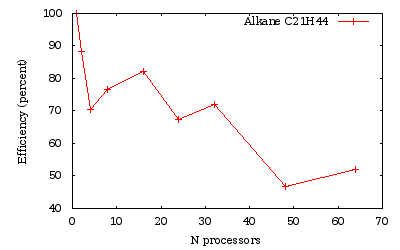
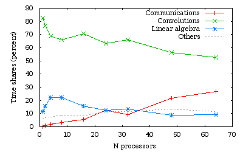
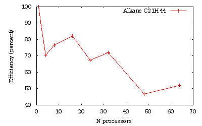
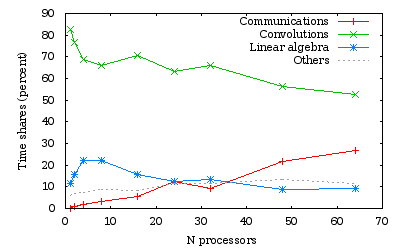
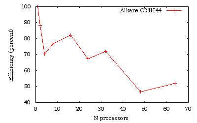
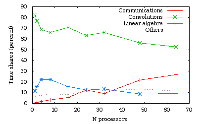

 
 
Time measurements for a run over several processors of a C21H44 alkane chain.
This lesson explains how to run the calculation of an isolated system using a wavelet basis-set on a parallel computer using MPI. You will learn the different characteristics of a parallel run using the wavelet basis-set and test the speed-up on a small boron cluster of 14 atoms followed by a test on a bigger alkane molecule.
This lesson should take about 90 minutes and requires you have several CPU cores (up to 64).
You are supposed to know already some basics of parallelism in ABINIT, explained in the tutorial A first introduction to ABINIT in parallel.
The parallelism with the wavelet formalism can be used for two purposes: to reduce the memory load per node, or to reduce the overall computation time.
The MPI parallelization in the wavelet mode relies on the orbital distribution scheme, in which the orbitals of the system under investigation are distributed over the assigned MPI processes. This scheme reaches its limit when the number of MPI processes is equal to the number of orbitals in the simulation. To distribute the orbitals uniformly, the number of processors must be a factor (divisor) of the number of orbitals. If this is not the case, the distribution is not optimal, but the code tries to balance the load over the processors. For example, if we have 5 orbitals and 4 processors, the orbitals will have the distribution: 2/1/1/1.
There are no specific input variables to use the parallelism in the
wavelet mode as the only parallelisation level is on orbitals. So running
ABINIT with an mpirun command is enough (this command differs
according to the local MPI implementation) such as:
mpirun -np Nproc abinit < infile > logfile
For further understanding of the wavelet mode, or for citation purposes, one may read "Daubechies wavelets as a basis set for density functional pseudopotential calculations", L. Genovese, A. Neelov, S. Goedecker, T. Deutsch, S.A. Ghasemi, A. Willand, D. Caliste, O. Zilberberg, M. Rayson, A. Bergman et R. Schneider, J. Chem. Phys. 129, 014109 (2008).
We propose here to determine the speed-up in the calculation of the
total energy of a cluster made of 14 boron atoms. Open the file
tgswvl_01.in. It contains first the definition of the wavelet
basis-set. One may want to test the precision of the calculation by varying the
wvl_hgrid
and wvl_crmult variables.
This is not the purpose of this tutorial, so we will use the given values (0.45Bohr and 5).
Run ABINIT with 3 processors. The overall time is printed at the end of the output file (and of the log):
Proc. 0 individual time (sec): cpu= 172.6 wall= 172.6
Read the output file to find the number of orbitals in the calculation (given by the keyword nband). With the distribution scheme of the wavelet mode, the best distribution over processors will be obtained for, 1, 3, 7 and 21 processors. Create four different directories (with the number of processors for instance) and run four times ABINIT with the same input file, varying the number of processors in {1, 3, 7, 21}. The speed-up is the ratio between the time with one processor and the time of a run with N processors.
Assuming that the directories are called {01, 03, 07, 21}, one can grep the over-all time of a run and plot it in gnuplot with:
plot "< grep 'individual time' */log | tr '/' ' '" u 1:(ttt/$11) w lp t "Boron cluster", x t "Ideal speed-up"
where ttt represents the time on one processor. The efficiency (in percent) of the parallelization process is the ratio between the speed-up and the number of processors. One can plot it with:
plot "< grep 'individual time' */log | tr '/' ' '" u 1:(ttt/$11/$1*100) w lp t "Boron cluster"
The first conclusion is that the efficiency is not so good when one use one orbital per processor. This is a general rule with the wavelet mode: due to the implementation, a good balance between speed and efficiency is obtained for two orbitals per processor. One can also see that the efficiency generally decreases with the number of processors.
This system is rather small and the amount of time spent in the overhead (read the input file, initialise arrays...) is impacting the performance. Let's see how to focus on the calculation parts.
The wavelet mode is generating a time.prc file at each run
(warning: it will erase any existing copy). This is a text file and can be read
directly. There are three sections, giving the time of the
initialisation process (before entering the SCF loop), the time of the SCF loop
itself, and the time for the post-processing. Let's have a closer look to the
SCF section (the actual figures will vary between runs and number of
processors):
CATEGORY mean TIME(sec) PERCENT CrtLocPot 1.70E-01 0.018 ApplyLocPotKin 1.83E+02 19.865 ApplyProj 1.44E+00 0.156 Precondition 3.42E+02 37.055 Rho_comput 1.10E+02 11.926 Rho_commun 5.45E+00 0.591 Un-TransSwitch 5.37E+00 0.582 Un-TransComm 5.95E+00 0.645 GramS_comput 6.84E+01 7.417 GramS_commun 8.91E-02 0.010 LagrM_comput 1.36E+02 14.784 LagrM_commun 1.44E-01 0.016 Diis 1.41E+01 1.527 PSolv_comput 2.31E+01 2.508 PSolv_commun 3.31E+00 0.358 Exchangecorr 5.01E+00 0.543 ---------------------------------------------------------------------- Total CPU time for category: WFN_OPT = 9.22E+02 Total categorized percent 98.0
With the total time of this SCF section, one can compute the speed-up and the efficiency of the wavelet mode more accurately:
N processors Speed-up Efficiency (%)
3 2.3 75.3
7 3.7 52.8
21 7.5 35.6
With the percentages of the time.prc file, one can see that, for this example, the time is mostly spent in the precondionner and the application of the local part of the Hamiltonian on the wavefunctions. Let's categorise the time information:
_commun entries and the Un-TransComm one.Precondition, ApplyLocPotKin, Rho_comput.GramS_comput, LagrM_comput.By doing the summations, one can give the percentage per category during the SCF loop:
CATEGORY mean TIME(sec) PERCENT Communication 14.9 1.62 Convolutions 635.0 68.87 Linear algebra 204.4 21.17 Other 67.7 7.34
You can analyse all the time.prc that have been generated for the different number of processors and see the evolution of the different categories.
If the number of processors is not a divisor of the number of orbitals, there will be some processors with fewer orbitals than others. This is not the best distribution from an orbital point of view. But, the wavelet mode also distributes the scalar arrays like density and potentials by z-planes in real space. So some parts of the code may become more efficient when used with a bigger number of processors, like the Poisson Solver part for instance.
Run the boron example with {2, 4, 14, 15} processors and plot the speed-up. One can also look at the standard output to the load balancing of the Poisson Solver and the load balancing of orbitals (with 15 processors):
[...]
Processes from 0 to 9 treat 2 orbitals
Processes from 10 to 10 treat 1 orbitals
Processes from 11 to 14 treat 0 orbitals
[...]
Load Balancing for Poisson Solver related operations:
LB_density : processors 0 - 13 work at 100%
processor 14 works at 40%
LB_kernel : processors 0 - 12 work at 100%
processor 13 works at 92%
processors 14 - 14 work at 0%
One can see that, as expected, the load balancing per orbital is bad (4 processors are doing nothing), but one can see also that the load balancing of the scalar arrays is not so good since the last processor will have a reduced array. It is thus useless to run this job at 15 processors, 14 will give the same run time (since the load balancing will be better).
Let's do the same with a bigger molecule and a finer grid. Open the file
tgswvl_02.in. It contains the definition of an alkane chain of 65
atoms, providing 64 orbitals. Run this input file with {1, 2, 4, 8, 16, 24, 32,
48, 64} processors. The run with one processor should take less than one hour. If
the time is short, one can reduce wvl_hgrid
in the input file to 0.45.
 
Time measurements for a run over several processors of a C21H44 alkane chain.
As we obtained previously, the efficiency is generally lowered when the number of processors is not a divisor of the number of orbitals (namely here 24 and 48).
With the wavelet mode, it is possible to efficiently decrease the run time by increasing the number of processors. The efficiency is limited by the increase of amount of time spent in the communications. The efficiency increases with the quality of the calculation: the more accurate the calculations are (finer hgrid...), the more efficient the code parallelization will be.